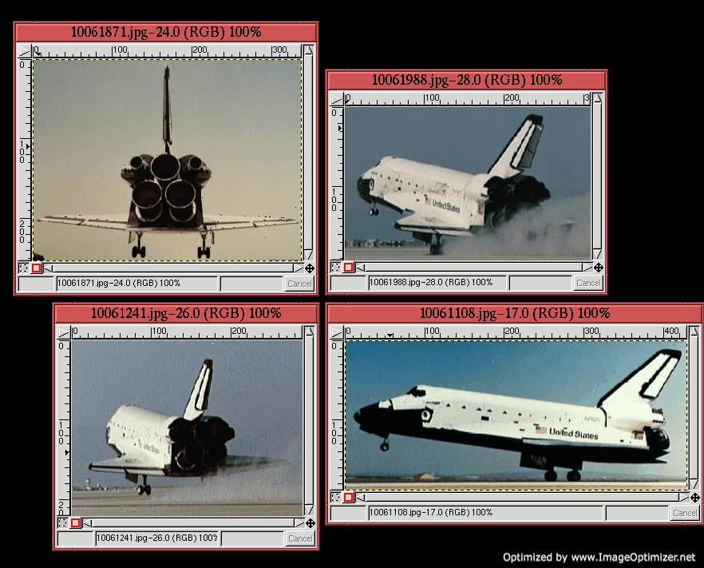
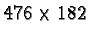

A graphic tool often seen on Web pages is the ubiquitous, animated GIF. This is an image file format that can contain a sequence of frames combining text, images, and timing information to create a flip-book-like movie. As you will see in this chapter animated GIFs are easy to create, edit, and view in the GIMP.
The GIMP can save animations to several different file formats, but when making animations for the Web, the choice is limited to GIFs. GIF stands for Graphics Interchange Format , and GIF format files support a number of features that are particularly useful for Web graphics.
First, GIF is an eight-bit-per-pixel format, which means that with careful planning a GIF can be almost always properly displayed on systems providing only eight bits of color (see Section 9.5). Second, GIFs allow for transparency, a feature not supported by JPEG (Joint Photographic Experts Group), the other principle file format for images on the Web. Third, GIFs support interlacing which may be of interest for the transmission of images over low bandwidth networks. Finally, the GIF format supports layers and attached layer timing information. This last feature is the one exploited for GIF animations.
Animations are sequences of images that can be played according to timing information attached to each frame. The GIMP has built-in support for animations because each layer in an image can be treated as an animation frame by the GIMP. The GIMP supports this equivalence by allowing timing information to be attached to layers, by providing a tool for playing layered images as animations, and by supporting the conversion of layered images to Indexed format and output as GIF files.
Figure 9.1
(Note: The animation can be turned off by clicking on the Stop button of your browser.) Notice that each layer is named and that the names contain timing information used for the frame animation. The timing information is indicated by the text in the format (XXXXms), where XXXX is a 1 to 4 digit number, and ms indicates that the units of the number are in milliseconds. The parentheses are a required part of the format. Thus, for this example, the Background layer appears empty for 1 second (1000ms) followed by the four letters appearing at intervals of 100ms, 400ms, 600ms, and 800ms. Name and timing information is added to each layer by double-clicking the layer title area to the right of the thumbnail as described in Section 2.1.1.
The animation in Figure 9.1(a) can be viewed in the GIMP using the Animation Playback tool found in the Image:Filters/Animation menu. As you can see in Figure 9.1(c), the tool consists of a Play/Stop button, a Step button, which allows the animation to be stepped along a frame at a time, and a Rewind button, which can be used to set the animation back to the first frame. This last button is particularly useful if the animation consists of a very large number of frames. The Animation Playback tool plays the animation associated to the image using the timing information as specified in the name of each layer. Note that there is also a progress bar that shows the animation's current frame number.
By default, GIMP animations sequentially present frames using the Combine mode. This means that as each new frame is displayed, it is stacked on the previous one. Thus, if a new frame is partially transparent the previous frame can be seen through its transparent parts. This is not the traditional movie paradigm for animation, which, instead of combining frames, replaces each frame with a new one. Consequently, although the frames in Figure 9.1 all consist of single letters on a transparent field, the animation spells out the word GIMP a letter at a time on the white background of the first layer.
Figure 9.2
(Note: The animation can be turned off by clicking on the Stop button of your browser.) The explicit use of Combine mode can be made by typing the text (combine) instead of (replace) in a layer title. The two modes can be used together in an animation with some frames replacing and others combining.
The GIMP allows animations to be made in RGB and Grayscale formats, but an animation must be converted to Indexed format before it can be saved as a GIF. Trying to save to GIF without being in Indexed format generates an Export File dialog message that provides the user with information and options to correctly save the image.
Properly converting an image to Indexed format is accomplished with
the function Indexed found in the Image:Image/Mode menu. This brings up the Indexed Color
Conversion dialog shown in
Figure 9.3(b).
After an image has been converted to Indexed, it can be saved in GIF
format. This is accomplished by choosing Image:File/Save
As which brings up the Save Image
dialog shown in
Figure 9.4(a).
Clicking the OK button in the Save Image dialog brings up the Save as GIF options dialog shown in Figure 9.4(b). Because the image to be saved is multi-layered, the Animated GIF Options are available. These are not enabled for single layer images. The first option specifies whether the animation will loop continuously or not. Looping is the default. The next option is an entry box that specifies the time per frame for frames that have not been explicitly specified. The default is 100ms. For the examples in Figures 9.1 and 9.2, the timing information is given for each layer, so this option is irrelevant for these layers. Finally, the animation mode, either Replace or Combine, can be selected for all frames that have not been explicitly specified. The I Don't Care option defaults to Combine mode.
The compositing techniques discussed in Chapter 7 provide you with many tools for creating animated GIFs. In this section, an example of creating an animation illustrates how you can use some simple techniques to generate sophisticated animations.
The animation scenario has the space shuttle flying from an earth
orbit to a distant landing on the planet's surface. The animation is
created by compositing the four separate images shown in
Figure 9.5
|  |
The first step is to prepare the images in
Figures 9.5 and
9.6. The image in
Figure 9.6 is cropped to the desired size,
and each of the shuttle images in Figure 9.5
are selected from their backgrounds and placed into individual layers
of a single image, as shown in Figure 9.7.
The next step composites the shuttle images from Figure 9.7 into the cropped background image from Figure 9.6. The goal is to do this in a way that makes the shuttle look as if it is flying on a trajectory from its orbit in space to a landing point on the surface of the earth. The approach is to show the shuttle at various aspects while it distances itself from the viewer.
The primary tools used to achieve the desired result are the Transform tool and the Move tool. Figure 9.8
To give the shuttle landing a final special effect, an additional
layer showing a reflected glint of light is created. This is intended
to represent the shuttle entering the earth's atmosphere. The effect
is created by duplicating the background layer of the earth and
running the SuperNova filter found in the Image:Filters/Light Effects menu.
The dialog for this filter is shown in
Figure 9.9(b).
The animation is now almost complete. One more step is necessary
before it can be saved as a GIF file. The current state of the
animation consists of the background, a duplicate background with the
SuperNova effect, and seven transparent layers with various shuttle
images. This is shown in Figure 9.10(a).
The problem with Figure 9.10(a) is that neither the Replace nor Combine modes will create the desired animation with the layer frames as shown. In Replace mode, the animation would show a frame of the earth, then a frame with the earth showing the SuperNova effect, and then seven frames, each empty except for the shuttle. Alternatively, the animation obtained by using the Combine mode would show the earth, then a SuperNova effect on the earth, followed by a sequence of shuttles that appear one at a time but that only disappear at the end of the animation sequence. Neither of these is what we want.
To produce an animation that runs correctly, it is necessary to give each layer frame a copy of the Earth layer. This is done by duplicating the Earth layer seven times and then merging each copy with a shuttle frame. Section 2.7.1 describes how to do this using the Merge Down function. The result of merging the seven background layers with the seven shuttle frames is shown in the Layers dialog illustrated in Figure 9.10(b). Also shown, the layer with the SuperNova effect has been moved to the top of the layer stack (the final animation frame), and the timing information of the layer at the bottom of the stack (the first animation frame) has been set to 2000ms. Thus, the final animation sequence remains in the bottom layer for 2 seconds, followed by a sequence of eight frames showing the shuttle's trajectory into the atmosphere, and, finally, showing the top frame, which displays the burst of light from the SuperNova effect.
The following figure illustrates the entire animation sequence:
(Note: The animation can be turned off by clicking on the Stop button of your browser.)
Saving an animation to GIF format can create large files, especially if the animation has many frames. For example, the space shuttle animation discussed in the previous section consists of an image whose dimensions are  pixels and has 9 frames. This is an image consisting of 780 thousand pixels. Due to compression built into the GIF image format, this saves to a 389 kilobyte file. However, the file size can still be significantly reduced by taking advantage of the high degree of redundancy in the image.
The redundancy is due to this animation changing very little from frame to frame. In fact, the background is always the same, and only the position and shape of the shuttle is changing. The function Animation Optimize in the Image:Filters/Animation menu takes advantage of this and can greatly reduce the size of the resulting file. It does this by differencing frames and only saving the non-zero values. The original animation is reconstructed by adding the differenced frames back into the background.
For the space shuttle animation, the file is reduced from 389 to 163 kilobytes if the Animation Optimize option is applied after conversion to Indexed format. If it is applied to the image in RGB mode, before conversion to Indexed format, an additional savings is realized and the resulting file only occupies 106 kilobytes on the disk. This improvement might not be general, and for projects where file size is important (as it is for low bandwidth network connections), it is advisable to experiment with the two methods.
The IWarp filter, found in the Image:Filters/Distorts menu, can interactively warp parts of an image and then automatically generate an animation that morphs from the original image to the warped one. This can be useful for creating certain types of animations.
Figure 9.11(a)
To automatically convert the distortion into an animation, click on
the Animate tab in the dialog. The dialog corresponding to this tab
is shown in Figure 9.12.
(Note: The animation can be turned off by clicking on the Stop button of your browser.)
{kind=link}